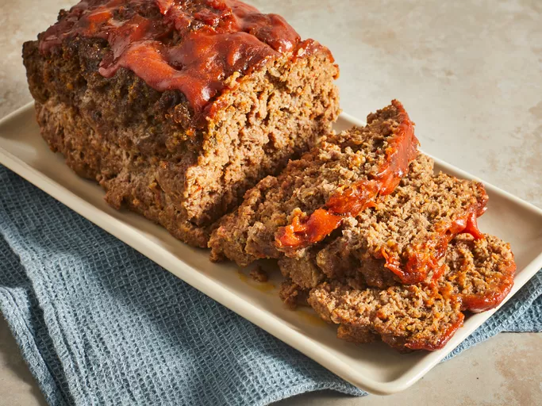

Meat Loaf, while bearing a slightly different name, represents the
same cherished culinary creation as Meatloaf. It's a testament to
resourceful cooking, transforming humble ground meat into a substantial
and flavorful meal. The process begins with selecting ground meat –
often beef, but variations using pork, turkey, or a combination are
equally popular, each lending a unique nuance to the final dish. To
achieve a tender and moist texture, the ground meat is mixed with a
filler, traditionally breadcrumbs soaked in milk or broth, which adds
moisture and lightness. Eggs act as a crucial binding agent, ensuring
the loaf maintains its shape during cooking. Flavor is paramount, and
Meat Loaf recipes typically include finely chopped aromatic vegetables
like onions and garlic, which infuse the entire dish with their savory
essence. A medley of seasonings, ranging from simple salt and pepper
to more complex combinations of dried herbs such as Italian seasoning,
bay leaf, or even a pinch of red pepper flakes for a subtle kick,
contributes layers of taste. The mixture is carefully formed into a
loaf shape, either freeform on a baking sheet or within a loaf pan,
and then baked until it reaches a safe internal temperature and
develops a rich brown crust. A defining characteristic of many Meat
Loaf recipes is a glaze applied towards the end of cooking. This glaze,
frequently based on tomato ketchup or sauce, is often enriched with
ingredients like brown sugar, molasses, or Worcestershire sauce,
resulting in a sweet, tangy, and slightly caramelized topping that
enhances the overall flavor profile. Served warm, sliced, and often
accompanied by classic side dishes like mashed potatoes, green beans,
or a hearty gravy, Meat Loaf remains a comforting and satisfying meal
enjoyed by families worldwide.